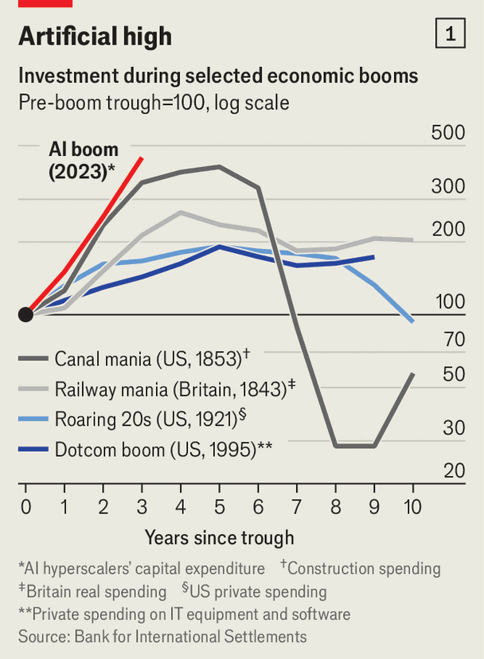
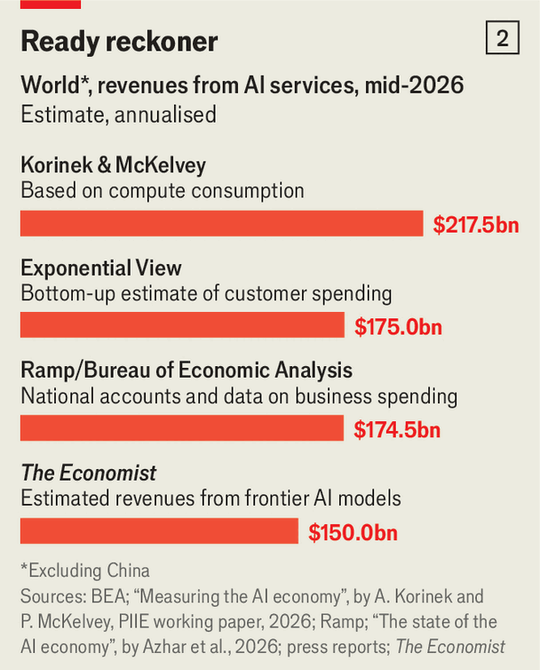
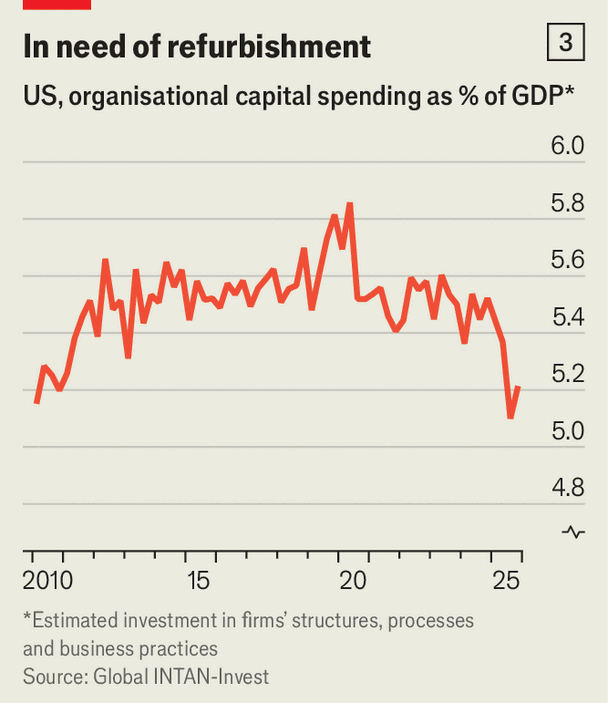

AI revenues are growing fast, but not fast enough
The returns on trillions of dollars of spending are deeply uncertain
Jul 30th 2026
YOU AIN’T seen nothing yet. Last year America’s biggest technology companies, including Amazon, Google and Microsoft, spent $450bn on infrastructure, much of it to power artificial intelligence. This was just an amuse-bouche. For the main course they will this year spend $900bn on chips, data centres, power and so forth, with a $1.4trn pudding to follow in 2027. To fund this feast they have borrowed more than $400bn this year. The AI capex boom is fast becoming the largest investment surge in history (see chart 1).

If superintelligence is in reach, building football fields’ worth of compute could also be history’s most valuable capital-allocation exercise. And yet capital spending can still generate disappointing returns for investors. Since peaking in June, the share prices of the biggest AI firms have fallen by 20%, as worries have mounted that flows of capital from one tech firm to another, rather than genuine demand from end-users, have been propping up the industry, while South Korea’s benchmark index, dominated by Samsung Electronics and SK Hynix, two big chipmakers, has dropped by almost 40%. After Meta reported second-quarter earnings on July 29th, its shares shed more than 7%, even as Mark Zuckerberg, its boss, defended its spending on AI, which has eaten deeply into free cashflow.
A rough calculation finds that covering AI capex through identifiable AI income requires revenue on the order of $2.5trn per year, more than tech’s entire combined revenue today (and far higher than what would have been needed a year or so ago, when capex plans were more modest). Only a small minority of consumers seem willing to pay for personal AI subscriptions, so the real money will have to be made from selling to enterprises. Traders might use Microsoft’s Copilot to create better financial models, for instance, while schools could teach children with models from Google. For now, though, sales in the trillions are a long way off.
For AI revenues to soar, more firms will have to use AI (what economists call an increase at the “extensive margin”) and use it more deeply (the “intensive margin”). At the extensive margin, roughly 20% of American firms used AI “in any…business functions” in the previous fortnight, according to the Census Bureau’s latest two-weekly survey. In Britain, official figures say about a third of firms claim to use AI, though the question is put differently. That indicates rapid technological diffusion by any standard. After all, four years ago no one used large language models.
Yet those numbers may have recently levelled off. In May economists at the Census Bureau reported that “AI use remained relatively steady in many sectors over the last six months.” A survey by Jon Hartley of the University of Texas at Austin and others has found that about 33% of people now use AI at work, down from a peak of 46% in mid-2025. If, say, a third of firms across the OECD club of mostly rich countries adopt AI, then to generate $2.5trn of AI revenues the firms would have to spend about $100,000 a year on average. Is that plausible?
Perhaps, though for now few firms treat AI as a core technology, which limits how much they are willing to spend on it. According to a survey by the European Central Bank, in late 2025 only a tenth of euro-area companies using AI reported doing so “intensively”. Researchers at the Bundesbank find that about half of German firms using AI do so for 5% of working hours or less. Ivan Yotzov of the Bank of England and his colleagues estimate that the average American executive uses AI for 1.7 hours a week—enough time to create a decent PowerPoint presentation, but not much more.
For these dilettantes, free or ultra-cheap AI models are often good enough. Official data from Britain suggest that close to half of businesses using AI do not pay for it, presumably making do with the free tier of an American model or an open-source Chinese one. Ramp, a fintech firm, finds that a fraction of firms spend thousands of dollars a month per employee on AI. The median firm’s monthly spending per worker in June, however, was $10.66. Intuit, a software firm which tracks small and medium-sized businesses in America, Britain and Canada, reports that about one in ten has paid for a dedicated AI tool.

Total AI spending can only be guessed at, because data sources are murky and the picture is changing fast (see chart 2). Exponential View, a consultancy, counts $175bn of generative-AI revenue, on an annualised basis, in June. In a recent paper Anton Korinek of Anthropic and Patrick McKelvey of the Bank of Canada estimate total “AI services” revenue. Adapting their methodology, we reckon this is currently around $220bn (again annualised). Ramp’s data imply that 2-3% of business spending now goes on AI, pointing to $170bn a year.
All these complex calculations roughly tally with a much simpler one: adding up the AI revenue of the firms selling most of the AI. Anthropic pulls in perhaps $75bn, annualised; OpenAI makes tens of billions; Google, via its AI model Gemini, and Microsoft probably get a bit less. SpaceX may have a few billion dollars’ worth of revenue from enterprise AI this year. Meta also makes a few bucks from AI. Add this up and you land at roughly $150bn a year.
Revenue is rising extraordinarily fast. But perhaps not fast enough for investors, as calculations by Phurichai Rungcharoenkitkul of the Bank for International Settlements suggest. The crux is that AI usage, as proxied by the consumption of tokens, is probably growing even more quickly than revenue. This may be because more people are flitting from one free model to the next, rather than paying. In Mr Rungcharoenkitkul’s analysis, this has an important implication: at least part of the AI capex splurge represents zero-sum competition. Firms are using some of the extra compute they are building not to expand the paying market, but to poach customers from rivals. The paper implies that perhaps one-third of the investment, or even more, is unlikely to make a satisfactory return.
That said, revenues may soon grow even more quickly, if two conditions are met. The first is that AI boosts productivity markedly. For now, there is little evidence that AI is transforming businesses. Few firms are saving money by replacing workers with bots. According to Mr Yotzov’s study, nine in ten executives report no impact of AI on their firm’s productivity over the past three years. If that were to change, though, more firms would see reason to devote greater resources to the technology. They would also be happier to absorb price rises, juicing revenue further.

The second is that AI adds to “intangible capital”. For firms to make the most of AI they cannot simply pay for a chatbot, but must instead rework their processes, including their staff and their use of data, from top to bottom. The historical evidence suggests that for every $1 of investment in computer hardware, companies have made $5-10 of these intangible investments—which implies they would need to spend trillions of dollars a year if AI is to reach its potential.
So far, however, there is little evidence of an intangible-investment boom. Data-organisation firms like Palantir have revenues in the billions, not hundreds of billions. The share of American workers leaving their jobs is close to an all-time low, suggesting little reorganisation of labour. New data indicate that American companies’ investment in “organisational capital”—essentially efforts to improve their routines, processes, culture, supplier relationships and data flows—has been declining as a share of GDP (see chart 3). When AI takes over the economy, you will be able to feel it. ■